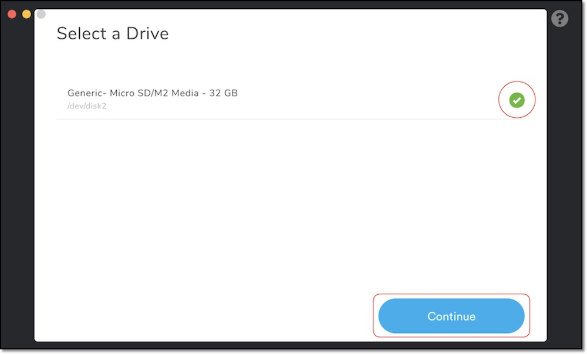

1.SDカードの作成
SDカードのイメージ
| SDカードの種類 | Download | 公開元 |
|---|---|---|
| JetPack4.3対応版 | SDカードのイメージ | NVIDIA社公開のイメージ |
NVIDIA-AI-IOTのWikiのページが参考になります。
最新はJetPack4.3対応版です。こちらのイメージをお使いください。
JetPackは最新版を
JetPackは最新版を使う事をお勧めします。JetPackのVersionのUpdateにともないCUDAのライブラリもUpdateされます。同じJetson nanoでもCUDAのVersionが上がることで、動作のパフォーマンスが向上します。
JetPack4.4で独自構築する場合は注意を
JetPack4.4ベースで独自構築する場合は、HDMI経由でDisplayに画面が映らなくなる場合があります。原因はboot imageが古いためです。boot imageを更新する必要があるため、sdkmanagerを経由してJetson nanoのSDカードにイメージを焼き込んでください。その際にboot imageも同時に、更新されます。
SDカードの焼き込み
SDカードのイメージは、Etcherを用いて、SDカードに焼き込む。



JetBotの起動
SDカードをJetson Nanoに差し込み起動します。
本SDカードのidとpassは下記の通りです。ログイン時に使用します。
| 項目 | 内容 |
|---|---|
| ID | jetbot |
| Pass | jetbot |